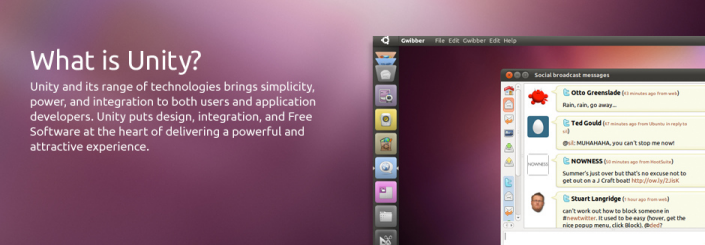
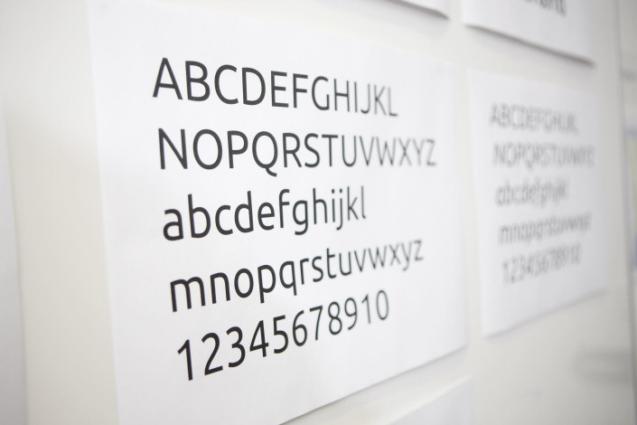

Meglátjuk, mit sikerül a Canonicalnak alkotni. Magáról a Unity-ről nem írok, a Mogorva Mormotán már megtették helyettem.
Kényelmes megoldást választok, videókat és képeket teszek be, egyrészt mert így megkímélem magam az írástól, másrészt mert a videókat és a képeket mindenki szereti. :) Az első egy rövid bemutató a Canonical Designtól, a második pedig egy screencast, amit tegnap este készítettem.
https://vimeo.com/20523493
https://vimeo.com/20821732
YouTube
Nagyon ígéretes cucc ez a Unity, az Ubuntu 10.10 (Maverick Meerkat) Netbook Edition már a Unity egy korábbi verziójával volt szerelve, de azóta persze sok minden változott. Úgy látom, hogy az új Ubuntu fontcsalád és a tavalyi frissítés nagyon jót tett a brandnek. Sokkal egységesebb, profibb megjelenést kölcsönöz.
Pár órás használat után azt kell mondjam, nagyon tetszik a Unity, bár nekem kicsit túl színes. Egyáltalán nem kellett semmit megtanulni, kényelmes és egészen szép. Ha rágyúrnak a uTouch fejlesztésére, akár még tableteken is lehet létjogosultsága. Disztró upgrade után azt hiszem ezt fogom majd használni, ha nem jön be, akkor visszaváltok a már jól bevált Gnome-ra.

Az Ubuntu 11.04 jelenlegi változata (Alpha 3) kifejezetten fejlesztőknek és tesztelőknek szánt előzetes, ezért a használata éles rendszeren nem ajánlott.